Módulo 2 | Aula 1
Importância para a Saúde Pública e principais instituições produtoras de dados populacionais no Brasil
Principais instituições produtoras de dados populacionais no Brasil
Após compreendermos a importância estratégica dos dados populacionais para planejamento, gestão e avaliação de ações em Saúde Pública, é fundamental conhecer quais são as principais instituições responsáveis pela produção dessas informações no Brasil. Vamos focar em dois grandes provedores de informação:
Produz dados demográficos, sociais e econômicos por meio do Censo, pesquisas domiciliares e levantamentos amostrais.
Organiza e disponibiliza informações sobre morbidade, mortalidade, nascimentos, internações e vigilância em saúde por meio de seus sistemas de informação.
Juntas, essas instituições fornecem a base informacional que sustenta a formulação de diversas políticas públicas, fomentam a análise da situação de saúde da população e a tomada de decisões baseadas em evidências.
IBGE
O Instituto Brasileiro de Geografia e Estatística (IBGE) é o principal órgão público federal responsável pela produção e análise de dados estatísticos, geográficos e socioeconômicos do Brasil, desempenhando papel essencial na compreensão da realidade nacional. Sua atuação está organizada em áreas temáticas como população, economia, meio ambiente e trabalho, assegurando informações de qualidade para subsidiar a tomada de decisões.
Entre suas principais pesquisas estão o Censo Demográfico, que traça o perfil da população a cada dez anos; a PNAD Contínua, que acompanha mensalmente informações sobre trabalho e rendimento; e a Pesquisa Nacional de Saúde, com um panorama das condições de saúde em nível nacional. O IBGE também realiza importantes levantamentos econômicos, como o Censo Agropecuário, os índices de preços ao consumidor e as Contas Nacionais. Além disso, produz as estimativas populacionais, fundamentais para o cálculo de inúmeros indicadores sociais e de saúde.
SAIBA MAIS!
Quer saber mais sobre todas as pesquisas e estudos desenvolvidos pelo IBGE?
Visando garantir amplo acesso às informações produzidas, o instituto disponibiliza ferramentas e plataformas digitais, como o Sistema IBGE de Recuperação Automática (SIDRA), que permite a tabulação e o download de dados, além da oferta de microdados em sua página oficial.
Acesso aos dados
Ao entrar no site do IBGE, no canto superior esquerdo da tela, logo abaixo do logotipo, é possível visualizar o ícone de três linhas que dá acesso ao menu rápido. Esse menu reúne oito categorias principais que organizam o conteúdo do site, facilitando a navegação pelos diferentes tipos de informação disponíveis.
Figura 1 - Acesso ao Menu rápido do site do IBGE.
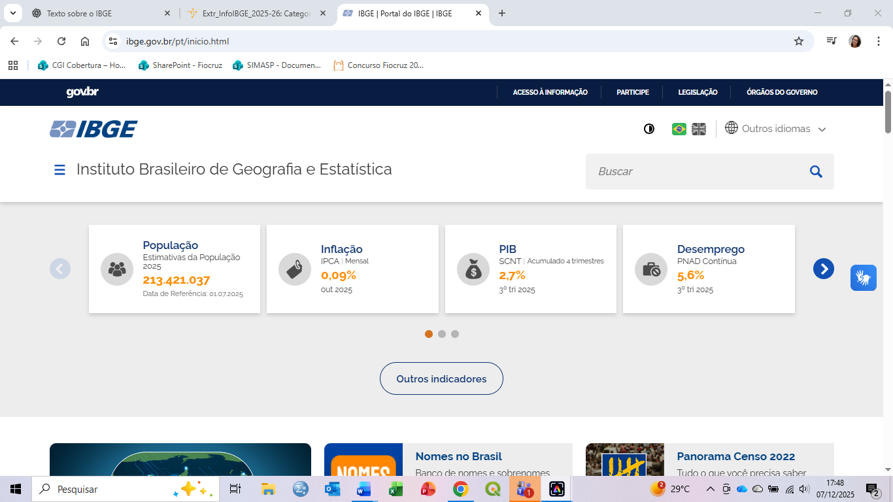
Fonte: IBGE (2025).
A categoria Estatísticas concentra as pesquisas e estudos produzidos pelo IBGE sobre a sociedade e a economia brasileiras. Ao posicionar o cursor sobre esse item, o usuário tem acesso a sete subcategorias temáticas que direcionam aos principais produtos do IBGE. Dentro dessa seção, o subtópico Download possui uma página específica voltada ao compartilhamento de dados e de informações em diferentes formatos, sendo especialmente útil para pesquisadores, estudantes e profissionais que utilizam esses dados em análises e projetos.
Figura 2 - Acesso ao tópico “Estatísticas, subtópico “Downloads” do site do IBGE.
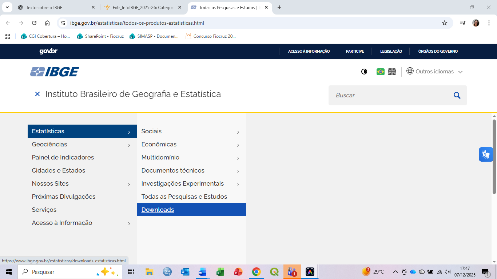
Fonte: IBGE (2025).
Nessa área de downloads, estão disponíveis tabelas que facilitam a análise dos dados, além dos microdados das pesquisas, que permitem estudos mais detalhados e personalizados. Também podem ser encontrados relatórios e publicações, com análises e interpretações produzidas pelo próprio IBGE, bem como mapas temáticos que apresentam a distribuição espacial de diferentes indicadores.
Para usuários com maior experiência técnica, o IBGE disponibiliza ainda bases de dados acessíveis por meio de softwares específicos ou por APIs, que permitem a integração dos dados com outros sistemas. Outra alternativa é o acesso via FTP, indicado para o download rápido de grandes volumes de informações.
SIDRA
O SIDRA (Sistema IBGE de Recuperação Automática) é uma plataforma online de tabulação e consulta de dados estatísticos do IBGE, sendo uma das ferramentas mais importantes para o acesso às informações produzidas pelo instituto. Tem em seu repositório informações de todas as pesquisas e estudos do IBGE, que podem ser visualizadas de forma prática e dinâmica.
A plataforma possibilita personalizar consultas, visualizar resultados em tabelas, gráficos e mapas, além de exportar os dados em diferentes formatos, ou ainda imprimir as tabelas e fazer ajustes de layout. Dependendo da seleção das variáveis, também é possível gerar gráficos automaticamente para apoiar a análise das informações.
Para acessar o SIDRA, entre no site oficial do IBGE e, na parte inferior da página inicial, localize a seção “Nossos Sites”, ou acesse diretamente o site da plataforma.
Figura 3 - Página inicial do site do IBGE para acesso SIDRA.
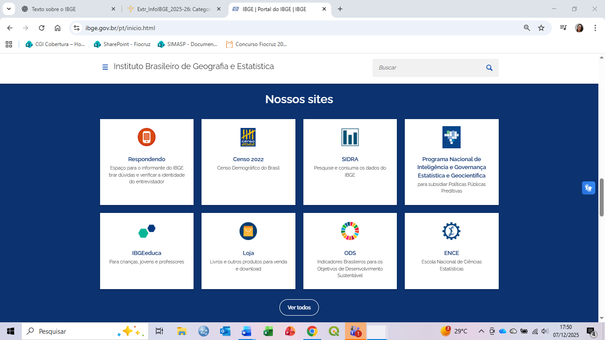
Fonte: IBGE (2025).
Figura 4 - Página inicial de acesso ao SIDRA.
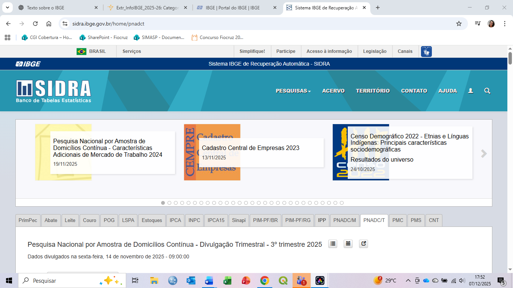
Fonte: IBGE (2025).
SAIBA MAIS!
Para auxiliar você a usar o SIDRA, indicamos uma série de vídeos de treinamento que descrevem, com exemplos, como encontrar as informações necessárias passo a passo e como personalizar tabelas de acordo com suas necessidades. Acesse!
Ministério da Saúde
O Ministério da Saúde (MS) é uma das mais relevantes e complexas instituições produtoras de dados populacionais no Brasil, desempenhando papel estratégico na estruturação do Sistema Nacional de Informações em Saúde. Sua atuação é fundamental para a consolidação de uma base empírica robusta, capaz de subsidiar a formulação, a implementação e a avaliação de políticas públicas de saúde em escala nacional. Nesse sentido, o ministério organiza e integra um extenso conjunto de sistemas de informação que registram, monitoram e analisam eventos vitais, agravos, procedimentos e condições de saúde da população brasileira.
Entre os principais sistemas sob sua coordenação destacam-se o Sistema de Informação sobre Mortalidade (SIM), o Sistema de Informações sobre Nascidos Vivos (SINASC), o Sistema de Informação de Agravos de Notificação (SINAN), o Sistema de Informações Hospitalares do SUS (SIH/SUS) e o Sistema de Informações Ambulatoriais do SUS (SIA/SUS), entre outros.
Além dos sistemas administrativos e de vigilância, o Ministério da Saúde também desempenha papel central na coordenação de inquéritos populacionais de grande abrangência, como a Pesquisa Nacional de Saúde (PNS), realizada em parceria com o IBGE, o Vigitel e a PeNSE – Pesquisa Nacional de Saúde do Escolar.
A centralidade do Ministério da Saúde como produtor de dados populacionais decorre não apenas de sua capacidade de gerar informações amplas e sistemáticas, mas também de sua atuação normativa na definição de padrões, metodologias e fluxos de informação.
Outras fontes de dados relevantes
Além do IBGE e do Ministério da Saúde, existem diversas fontes de dados que oferecem perspectivas complementares para análises epidemiológicas, demográficas e sociais. Essas fontes ampliam o escopo analítico ao oferecer dados sobre determinantes sociais, comportamentos de risco, acesso a serviços, desigualdades regionais e condições de vida.
Instituto de Pesquisa Econômica Aplicada (IPEA)
O IPEA disponibiliza um amplo conjunto de dados voltados para análises socioeconômicas, demográficas e territoriais que apoiam pesquisas e formulação de políticas públicas; grande parte pode ser consultada pelo portal Ipeadata. Esses dados oferecem uma visão integrada de fatores estruturais que influenciam a saúde e o bem-estar da população.
Figura 5 - Página inicial de acesso ao Ipeadata.
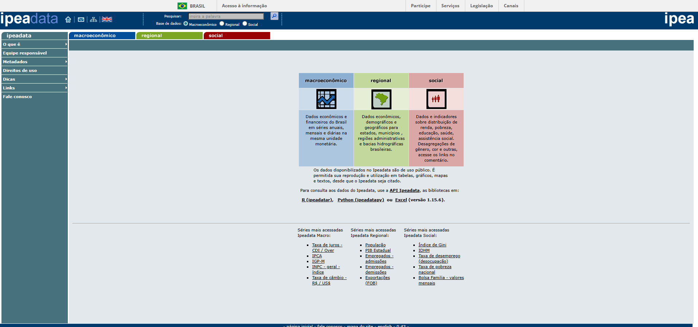
Fonte: Ipeadata (2025).
Plataforma de Ciência de Dados Aplicada à Saúde (PCDaS)
A PCDaS é uma plataforma pública, gratuita e em nuvem desenvolvida pelo Icict/Fiocruz que reúne grandes conjuntos de microdados de saúde e socioeconômicos de diversas fontes, organizados e prontos para análise.
Figura 6 - Página inicial de acesso ao PCDaS.
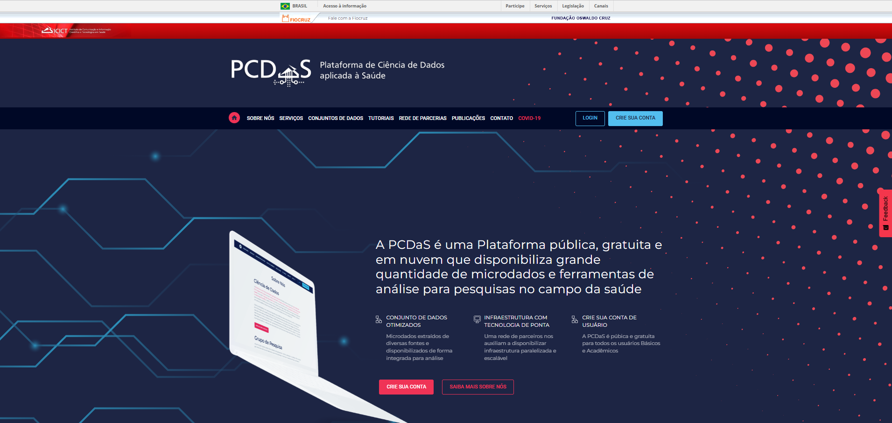
Fonte: PCDaS (2025).
Observatório Nacional dos Direitos Humanos (ObservaDH)
O ObservaDH é uma plataforma pública que reúne dados e indicadores estratégicos sobre direitos humanos no Brasil, disponibilizando informações baseadas em diversas fontes oficiais para apoiar o planejamento, o monitoramento e a avaliação de políticas públicas voltadas a grupos vulnerabilizados. A plataforma agrega mais de 500 indicadores em temas como crianças e adolescentes, pessoas com deficiência, LGBTQIAPN+, pessoas idosas, pessoas em situação de rua, sistema prisional e outras populações, apresentados por meio de painéis e narrativas de dados acessíveis ao público. Esses dados permitem analisar padrões sociais, desigualdades e avanços em direitos civis e sociais e são úteis para gestores, pesquisadores e cidadãos interessados em evidências sobre direitos humanos no país.
Figura 7 - Página inicial de acesso ao ObservaDH.
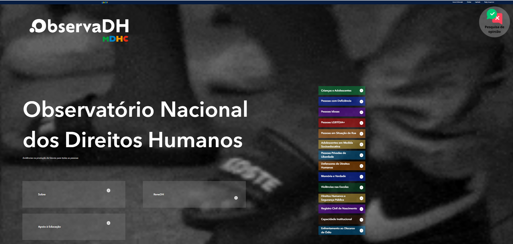
Fonte: ObservaDH (2025).
Sistema de Indicadores de Saúde e Acompanhamento de Políticas do Idoso (SISAP-Idoso)
O SISAP-Idoso disponibiliza indicadores sobre a saúde e condições de vida da população idosa no Brasil, organizados por dimensões como mortalidade, morbidade, uso de serviços de saúde, provisão de medicamentos e características demográficas, com dados acessíveis em níveis federal, estadual e municipal. O sistema integra informações de múltiplas fontes (como SIM, SIH/SUS, SIA/SUS, inquéritos domiciliares e outras bases) para apoiar planejamento, monitoramento e avaliação de políticas públicas voltadas à pessoa idosa, oferecendo uma visão ampla e atualizada da situação de saúde desse grupo populacional.
Figura 8 - Página inicial de acesso ao SISAP-Idoso.
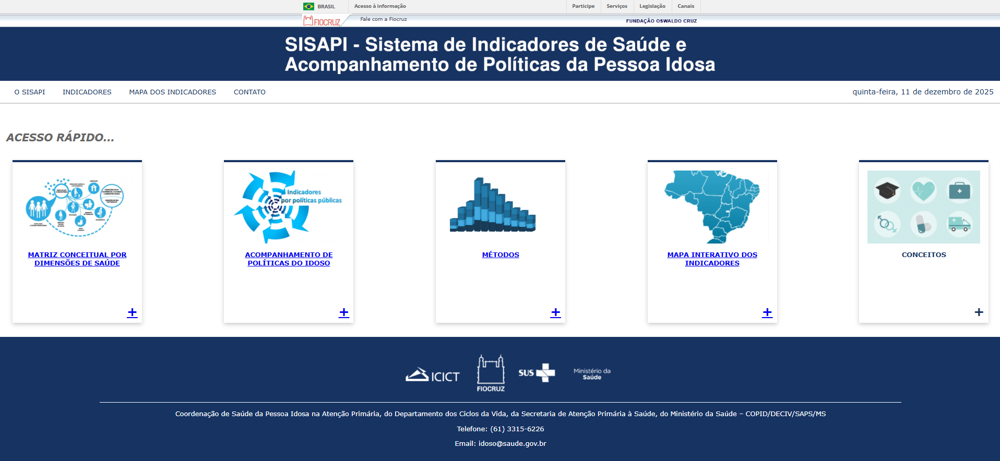
Fonte: SISAP-Idoso (2025).
Observatório Brasil da Igualdade de Gênero
O Observatório Brasil da Igualdade de Gênero disponibiliza um conjunto de dados e indicadores socioeconômicos e demográficos sobre as mulheres no Brasil, organizados em painéis com gráficos e tabelas que retratam temas como estrutura demográfica, autonomia econômica e trabalho, educação, violência de gênero e participação em espaços de poder e decisão, permitindo análises por ano, unidades da federação e municípios. Esses indicadores subsidiam a formulação e o acompanhamento de políticas públicas e evidenciam desigualdades entre mulheres e homens em múltiplas dimensões social e econômica.
Figura 9 - Página inicial de acesso ao Observatório Brasil da Igualdade de Gênero.
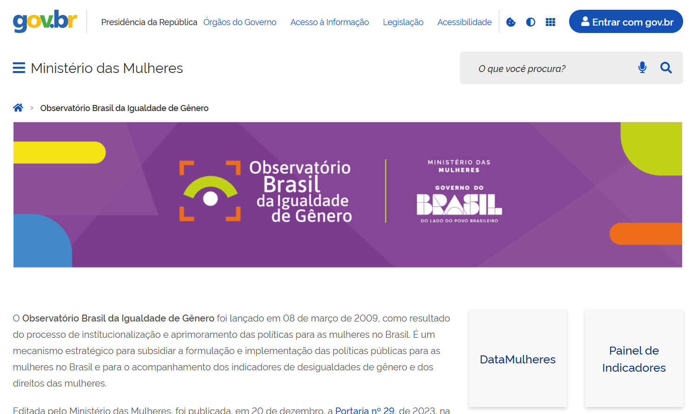
Fonte: Observatório Brasil da Igualdade de Gênero (2025).
Plataforma online da Pesquisa Nacional de Saúde (PNS)
A plataforma online da Pesquisa Nacional de Saúde (PNS) coordenada pelo ICICT/Fiocruz, reúne painéis de indicadores, bases de dados, histórico da pesquisa, questionários e documentos relacionados às edições da PNS (2013 e 2019). Na plataforma é possível acessar um Painel de Indicadores interativo com dados sobre determinantes de saúde, estilos de vida, acesso e utilização de serviços, além de informações metodológicas e os próprios questionários da pesquisa, oferecendo informações detalhadas e visualizações dos principais resultados da PNS para apoiar análises e pesquisas em Saúde Pública.
Figura 10 - Página inicial de acesso a Pesquisa Nacional de Saúde (PNS).
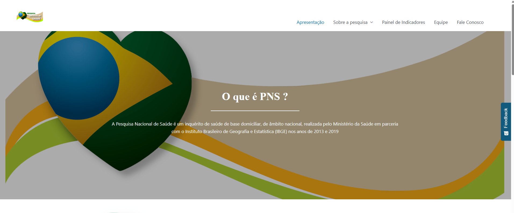
Fonte: Pesquisa Nacional de Saúde (PNS) (2025).
Observatório de Saúde da População Negra
O Observatório de Saúde da População Negra reúne e organiza dados e indicadores sobre as condições de vida, saúde e vulnerabilidades da população negra no Brasil, incluindo informações sociodemográficas e de saúde que permitem acompanhar morbidade, mortalidade e desigualdades estruturais. Por meio de painéis e séries históricas, a ferramenta possibilita análises comparativas de indicadores como mortalidade materna, doenças específicas, acesso a serviços de saúde e características sociais, além de, em algumas versões, incluir dados específicos sobre comunidades tradicionais, como população quilombola, ampliando a visibilidade de desigualdades raciais e subsidiando a formulação e a avaliação de políticas públicas para o enfrentamento do racismo e promoção da equidade racial.
Figura 11 - Página inicial de acesso ao Observatório de Saúde da População Negra.
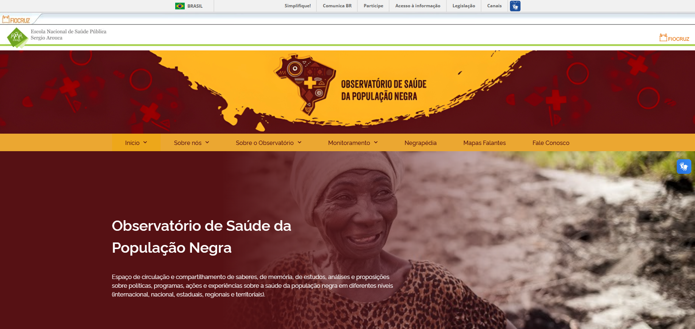
Fonte: Observatório de Saúde da População Negra (2025).
Atlas do Desenvolvimento Humano no Brasil
O Atlas do Desenvolvimento Humano no Brasil é uma plataforma de disponibilização de informações estatísticas sobre o desenvolvimento humano e sustentável que abarca os diversos níveis do território brasileiro, sendo fruto de uma parceria entre o Programa das Nações Unidas para o Desenvolvimento (PNUD), o Instituto de Pesquisa Econômica Aplicada (Ipea) e a Fundação João Pinheiro (FJP). Além de publicar o Índice de Desenvolvimento Humano Municipal (IDHM), a plataforma também disponibiliza dados sobre múltiplos indicadores que refletem as condições de vida no país nas dimensões sociais, econômicas, políticas e ambientais, oferecendo mais de 330 indicadores em diferentes unidades espaciais.
Figura 12 - Página inicial de acesso ao Atlas do Desenvolvimento Humano no Brasil.
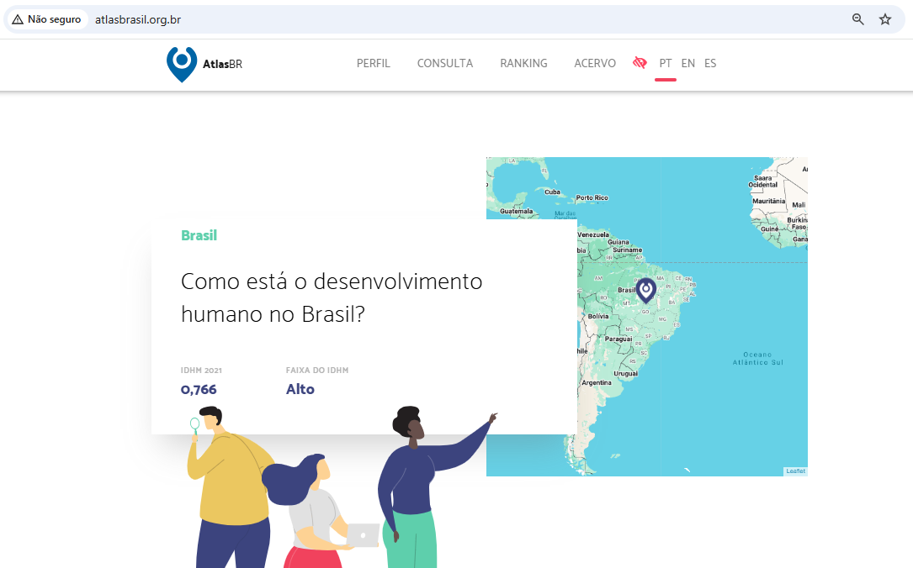
Fonte: Atlas do Desenvolvimento Humano no Brasil (2025).